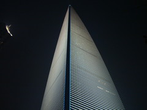

二泊三日の上海出張。
短期な上に書けない話が多いが、何とか記憶を頼りに小ネタを捻出しよう。
40前の先輩二人(面倒なので以後 X1, X2 と記す)と共に、おやじトリオの出張。
羽田からあっという間に到着し、手配されていたタクシーに乗ってホテルに直行。出張は本当に楽だけど、
甘えてしまうと自分の現在地すら認識できない。
まずは地下鉄に乗って、上海で一番有名な観光地である豫園に向かった。
庭園の外側に中華な土産物屋が広がって賑わっている。
そこで有名な小龍包屋を見つけたので早速食べることにした。
寒い中30分くらい並ばされて暇だったので、中の様子を観察していた。
メニューは一種類のみで、客に選択の余地を与えず迅速に処理される。
せいろ一組の小龍包16個を紙皿にどばっと無造作にあけ、一人分の皿が一瞬で完成する。
さすが大人気店は製造プロセスも効率化されている。
と思ったが、慌しくせいろの山が処理されると次の一山が蒸し終わるまではかなり時間があり、
店員達が暇そうにだらけていた。適当な店だ。
来る前に X2 氏が会社で中国人の若者にお勧めスポットを聞いたらこの店を紹介されたらしいが、
地球の歩き方でトップに乗っているようなスタンダードコースを期待して聞いたんじゃねえとぼやいていた。
そして豫園内。水に浮かぶ美しい庭園を巡る。
今日は冷え込みが激しく、寒さに耐えられなくなってきた。
お茶のサービスがあるというので暖を取ろうとしたら、風通しの良い部屋で延々茶の講釈を聞かされて余計に冷えた。
地下鉄で新天地へ向かった。若者のおしゃれスポットと言った感じの街だったが、あまりに寒いのですぐに喫茶店へ。
翌日会社で現地人の知り合いに聞いた話だと、あのあたりで飲んでいると綺麗な女の人が話しかけてきて怪しいことができます、だそうだ。
その後、日が落ちてきたので帰りは船で川を渡って戻りながら夜景を楽しむ。
船を降りてから、金融センタービルまで歩いた。
この街の空気のためか、空には妖気溢れる赤い満月が浮かんでいる。昨日新宿で見た月食に続き、今日も赤い月を見るとは。
川から眺める中心街
日曜のためか明かりは少ない | 赤い月 |
|
|
超高層の金融センタービルの近くで、建設中の巨大ビルを見た。
完成イラストによると、金融センタービルを更に超える高さらしい。
丸く積み重なるデザインは人間の業を感じさせるバベルの塔を彷彿とさせる。
空には赤い月。
100F の展望台で上海の夜景を眺めた。
ここは派手にライトアップされた奇抜なデザインの高層ビルが多い上海の中心地。
遠くを見ると、明かりが少ないのと空気が曇っているのとで、この周辺の明るさが際立つ。
それにしてもこの展望台、コストパフォーマンスは微妙。さっきの船に 75回乗れる。
| 金融センタービル。いろいろ高い | 上海のエネルギーが
ヤシマ作戦のように集中している |
|  |
|
最後に適当な中華レストランで夕食。
メインは激辛蛙。と言うか何を食っても辛い。
|